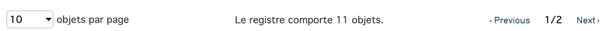
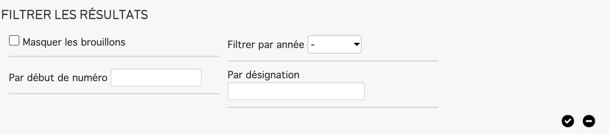
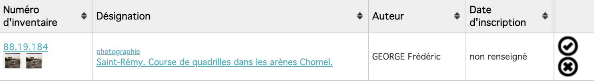

7. Le Registre des biens affectés sur CollectiveAccess¶
Le registre des biens affectés sert à répertorier les informations sur vos objets.
Réaliser son registre des biens affectés dans CollectiveAccess¶
Ajouter un objet¶
Pour ajouter un objet au registre, rendez vous sur la page de l'objet et cliquez dans le menu de gauche sur Afficher dans l'inventaire.
Vous arriverez sur une page de résumé de l'objet, sélectionnez Retour si vous souhaitez modifier certaines informations ou sélectionnez Inscrire à l'inventaire si vous souhaitez inscrire l'objet. Si vous inscrivez l'objet il sera en cours de validation et vous pourrez confirmer ou infirmer votre choix plus tard.
Gèrer les objets de l'inventaire¶
Pour consulter le registre des biens affectés, rendez-vous dans Procédures Réglementaires > Registre des biens affectés
Ce menu vous permet de consulter ou de gèrer les objets de l'inventaire:
-
En haut du menu vous pouvez gèrer l'affichage de vos objets, sélectionner le nombre d'objets par page, voir le nombre d'objets du registre et se déplacer entre les pages. Cliquez sur la petite flèche en haut à gauche pour filtrez les objets que vous souhaitez voir.  
-
Vous trouverais ensuite une liste avec les objets contenu dans votre registre. Pour chaque objet il est indiqué son numéro d'inventaire et une image (s'il y en a une), sa désignation, son auteur et sa date d'inscription. Il peut y avoir deux icones à droite des informations de l'objet, ces icône permette de choisir si l'objet est inscrit à l'inventaire. Attention : un objet inscrit à l'inventaire ne peut pas être modifié ou supprimer. Cliquez sur la coche pour ajouter l'objet et sur la croix pour ne pas l'ajouter 
-
En bas de la page vous pouvez générer un pdf contenant les informations du registre ou ouvrir une page montrant les photos des objets.
Imprimer votre registre d'inventaire¶
Repris du texte : Direction générale des patrimoines Service des musées de France, Mettre en œuvre l'édition informatisée réglementaire de registres d'inventaire muséaux [en ligne], 16 juin 2016, [Consulté le 17 février 2021], Disponible à l'adresse : https://www.culture.gouv.fr/content/download/197624/file/specifications-edition.pdf?inLanguage=fre-FR
L'édition du registre intervient une fois par an, au plus tard au 31 décembre de l'année suivant les acquisitions. Le registre est relié, titré, daté, paginé et paraphé. L'impression sera recto verso, dans l'ordre des numéros d'inventaire. Une copie de sécurité du registre annuel est déposée dans le service d'archives compétent. L'édition sous forme de tableau est déconseillée, car elle présente d'importantes contraintes de lisibilité, de pagination, d'impression et de reliure du registre.
**1/ Page de titre **¶
-
Titre : « édition informatisée du registre d'inventaire d'un musée de France, selon le modèle conforme à l'arrêté du 25 mai 2004 fixant les normes techniques relatives à la tenue de l'inventaire, du registre des biens déposés dans un musée de France, et au récolement » ;
-
Les nom et adresse du musée de France affectataire des collections inscrites dans le présent registre (et le cas échéant, numéro d'INSEE) ;
-
Les nom et adresse de la personne morale (collectivité territoriale, association, etc.) propriétaire du musée de France ;
-
Les dates d'ouverture et de clôture du registre ;
-
Les nom et adresse du lieu de conservation de la copie archivée du présent registre et de ses mises à jour annuelles ; --- emplacement du paraphe du responsable scientifique.
a/ Pages liminaires¶
-
Description des règles spécifiques adoptées en matière d'inventaire par les responsables du musée pour la tenue du registre d'inventaire,
-
Liste chronologique des personnels scientifiques responsables de la tenue du registre,
-
État des versements auprès du service d'archives compétent.
b/ Notices réglementaires des biens¶
Elles sont classées dans l'ordre des numéros d'inventaire ou des numéros de dépôt.
Leur contenu est composé des rubriques réglementaires de l'arrêté du 25 mai 2004 relatives au statut juridique du bien et portant description du bien (rubriques obligatoires) ainsi que des rubriques complémentaires « quand l'information est pertinente pour le bien ». L'intitulé des rubriques obligatoires doit toujours apparaître. Si le contenu de la rubrique est vide, la mention « néant » ou « non renseigné » doit apparaître afin d'éviter toute ambiguïté.
c/ Pages libres en fin de registre¶
Il faut les ajouter pour l'insertion manuelle d'éventuelles nouvelles réglementations ou de tout autre document utile à la tenue du registre.
2/ Impression du registre¶
a/Choisir le papier¶
Sélectionner du papier permanent (présentant la capacité de rester chimiquement et physiquement inerte dans le temps) adapté à l'impression laser. Il doit répondre à la norme « ISO 9706 1996 : Information et documentation --- Papier pour documents --- Prescriptions pour la permanence ».
Elle énonce les prescriptions sur les éléments suivants :
-
Composition : fibres longues, non recyclées et avec des charges de carbonate de calcium dont le taux est supérieur à 2 %, si possible sans azurants optiques (produits destinés à blanchir le papier) ;
-
Grammage de 90 g/m² ;
-
Respect du sens du papier : le sens de fabrication du papier impacte celui des fibres. Celui-ci doit être parallèle au côté long du papier. Ce point est particulièrement important pour la qualité de la reliure et l'ouverture aisée du registre. Il faut l'exiger du fournisseur ou de l'imprimeur et/ou vérifier sur la rame, après le format, le sens de la flèche ou la présence d'une des mentions suivantes : « sens marche » « bandes étroites » « BE », en anglais « Long grain », ou « LG » ;
-
Coloris : de préférence blanc naturel ou ivoire ;
-
Stockage : le papier permanent est conservé à l'obscurité et dans des conditions normales de température et d'humidité (Température entre 15° et 25° et humidité relative entre 45 % et 60 %).
b/ Choisir l'encre¶
Sélectionner une encre d'impression stable dans le temps et neutre (pH égal ou supérieur à 7) et répondant à la norme « ISO 11798 : 1999 Information et documentation --- Permanence et durabilité de l'écriture, de l'impression et de la reprographie sur les documents papier. Prescriptions et méthodes d'essais. » Cette norme s'applique à des documents imprimés en noir et blanc comme en couleurs. Elle énonce les prescriptions sur les éléments suivants :
-
Résistance et apparence des couleurs de l'image,
-
Solidité à la lumière,
-
Résistance à l'eau,
-
Transfert d'une image enregistrée,
-
Résistance à l'usure,
-
Résistance à la chaleur,
-
Effet de l'enregistrement sur la résistance mécanique du papier.
c/ Choisir le matériel d'impression¶
-
Imprimante laser ;
-
Le matériel d'impression bureautique est conservé à l'abri d'une source de chaleur et d'une source de lumière solaire directe ;
-
Paramétrages : impression recto verso, A4 portrait ;
-
Respect du sens du papier : la fibre du papier de chaque page devra être parallèle au côté relié du livre ;
-
Impression avec marges de 15 mm/20 mm minimum en marge de fond de cahier, 12 mm en marge de tête et de queue et 15 mm en marge de gouttières (afin que la reliure ne cache pas une partie du texte).
d/ Conserver les feuillets imprimés avant reliure¶
Pour assurer une bonne conservation des feuillets mobiles, dans l'attente de la reliure, il est conseillé de les conserver dans des chemises, des cartons, des pochettes, des parapheurs neutres et non colorés. Le plastique, les agrafes, les perforations et les classeurs à spirales sont à proscrire.
3/ Reliure du registre¶
a/Exigences liées à l'utilisation¶
Le registre doit :
-
Être unitaire et rester intègre (pas de possibilité d'ajouter ou de retirer des pages) ;
-
Être très solide : le volume peut être très important (plusieurs centaines de pages) ;
-
Permettre une ouverture et un feuilletage aisés ;
-
Avoir la meilleure conservation possible dans le temps.
Un registre fera au maximum 700 pages (entre 40 et 45 mm d'épaisseur). Au-delà de cette épaisseur, il vaut mieux faire deux tomes pour ménager les efforts mécaniques subis par la reliure.
b/ Spécifications de la reliure¶
Pour répondre aux exigences de conservation pérenne du registre, la reliure pourra être de deux types :
-
Idéalement, traitement couture sur surjet, pour un usage intensif à très intensif (prix indicatif avril 2012 : 30 à 35 euros par registre)
-
Traitement sans couture « coupé --- collé », pour un usage peu intensif (prix indicatif avril 2012 : 20 à 25 euros par registre)
La reliure devra répondre à plusieurs spécifications concernant :
-
Les matériaux entrant dans sa réalisation, qui doivent rester neutres et stables dans le temps
-
Le traitement du corps d'ouvrage,
-
Les règles générales de traitement
-
La couvrure,
-
Le titrage éventuel.
4/ Paraphage du registre¶
a/Comment parapher ?¶
La réglementation exige que les initiales ou une signature abrégée du responsable scientifique et administratif des collections soient apposées sur chaque page du registre, qu'il soit manuscrit ou produit informatiquement. Chaque page des registres et de leur copie de sécurité est validée par apposition du paraphe du responsable scientifique du musée affectataire des collections.
Le paraphe sera inscrit dans l'emplacement prévu à cet usage en bas de page de chaque registre, à l'aide d'une encre neutre.
b/ S'il est impossible de parapher¶
Le registre peut facilement compter plusieurs centaines, voire milliers de notices, imprimées sur autant, voire davantage, de pages... Il vaut alors mieux préférer au fastidieux paraphage page à page une vérification intelligente du contenu et de la structure du registre. Dans ce cas, le responsable scientifique et administratif des collections expliquera dans la page relative à la description des règles spécifiques adoptées en matière d'inventaire que, compte tenu du volume des données, il a renoncé à parapher page à page le présent registre pour se concentrer sur la vérification rigoureuse de son contenu.
Ce contrôle sera fait par :
-
Des sondages sur des lots de notices,
-
La vérification du nombre de pages et de la cohérence des numéros d'inventaire,
-
La vérification de l'absence de page blanche au sein de l'édition,
-
Et tous autres points jugés utiles.
Il est bienvenu également d'expliquer que les notices informatiques réglementaires compilées dans cette édition papier ont fait l'objet de contrôles, corrections et validations réguliers lors de la saisie et préalablement à leur impression.
5/ Conservation du registre¶
-
Une copie de sécurité doit être déposée dans le service d'archives compétent selon le statut du musée ;
-
Conserver le registre d'inventaire original dans les locaux du musée, dans un endroit présentant de bonnes conditions de sécurité et climatiques (par exemple, dans une boîte d'archives neutre et au même endroit que les registres papier utilisés auparavant, à l'idéal dans un coffre-fort ignifugé) ;
-
Les documents sont conservés dans une atmosphère stable et continue : il est indispensable d'éviter tout choc thermique et hygrométrique ;
-
Le niveau d'éclairement ne doit pas dépasser 36 000 lxh par an (nombre de lux par le nombre d'heures d'exposition à la lumière) soit une durée d'exposition de 90 jours, 8 h par jour.